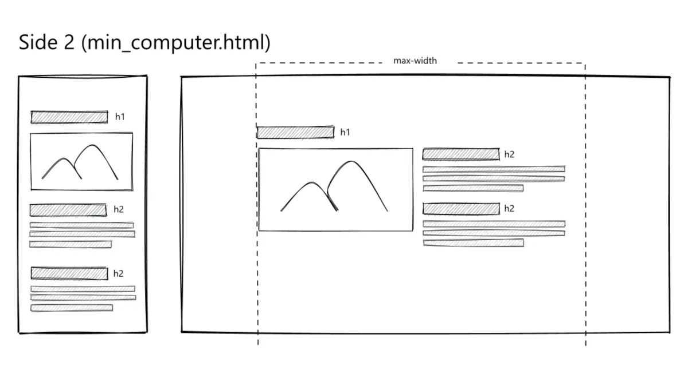

T2 Grundlæggende Web
I tema 2 har vi gennemført en studiestartsprøve. Prøvens formål var at vi som studerende kunne vise vores implementering af den teori og det materiale, vi er blevet introduceret til gennem forløbet. Grundlæggende Web handlede om de basale elementer inden for webudvikling. Her blev jeg introduceret til designprincipper, faglige begreber, arbejdsmetoder, samt forskellige programmer, der anvendes i udviklingen af websites.

Opgave, proces og udførsel
Opgaven bestod af udvalgte billeder og wireframes/layout diagrammer, som skulle inplimenteres på mit site. Under temaet lærte jeg arbejdede med de centrale teknologier og principper inden for webudvikling.
Jeg lærte at bruge HTML og VS Code til at strukturere indhold med forskellige elementer og designe layouts ved hjælp af CSS. Jeg lærte blandt andet også at arbejde med semantiske elementer som header, section og article, samt opbygning af
responsive layouts med Grid og Flexbox.
Derudover blev vi introduceret til brugen af classes og validering af kode for at sikre korrekt struktur og funktionalitet.
Endelig lærte vi om ophavsret og betydningen af at anvende billeder, grafik og andet materiale på en lovlig og ansvarlig måde. Jeg lærte en masse om struktur og hvordan et godt forarbejde kan gøre processen mere overskuelig og nemmere
udført.
